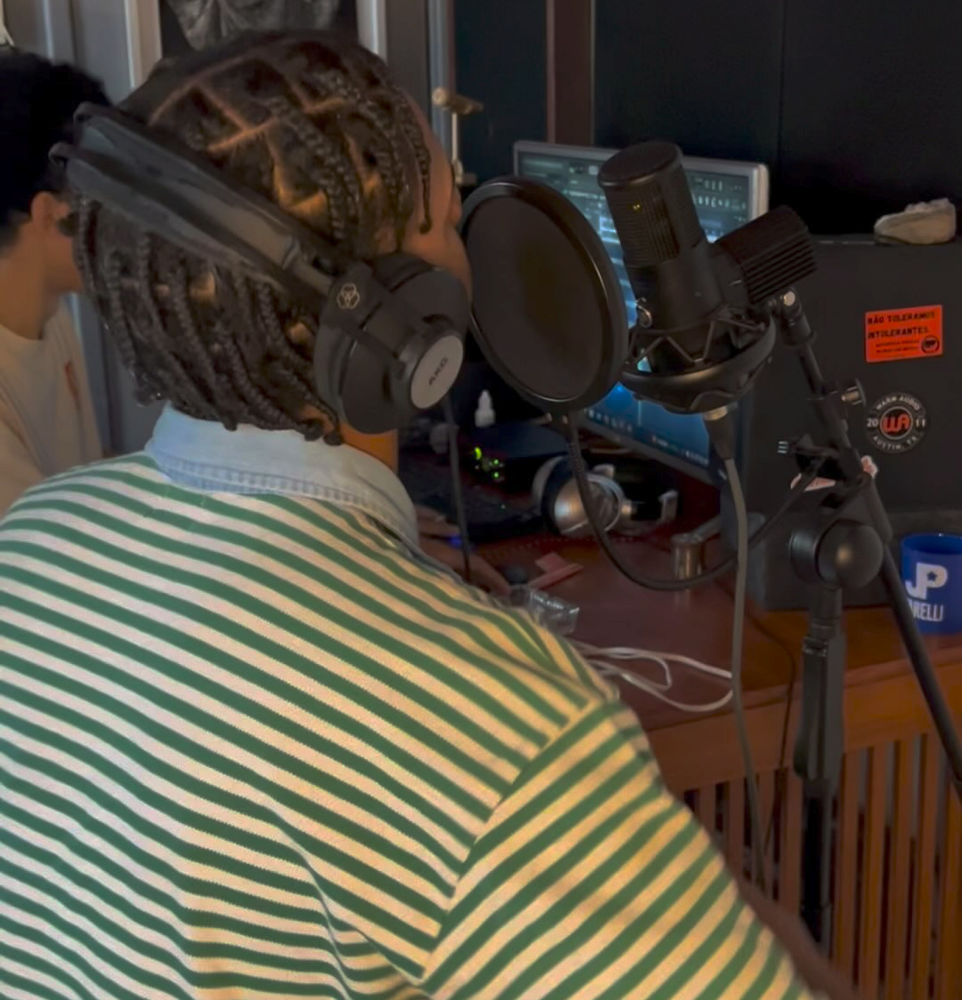

Estúdio Profissional de Música
Transformamos sua visão em som. Somos especialistas em captação de áudio, mixagem, masterização e produção instrumental — tudo no mesmo lugar.

Por Trás do Som
Pedro Gonçalves é o fundador e produtor por trás do Tal Do Estúdio. Na música começou a aprender instrumentos de corda em 2013 e iniciou a sua caminhada na produção em 2020 em seu antigo Studio Jumanji Records na freguesia. Com anos de experiência como produtor e também como Mc, ele construiu um espaço onde artistas encontram o suporte técnico e criativo que merecem para conseguir tirar suas ideias do papel.
Do beat a master, cada projeto reflete na personalidade do artista e garante que a sua identidade seja sempre valorizada com o cuidado e a paciência que arte requer.
Conheça o EstúdioAcesse Agora
Escolha seu beat, licencie e já sai gravando. Os instrumentais de GON estão disponíveis nas principais plataformas para produtores e artistas.
Plataforma
Licencie beats diretamente, com contratos digitais e entrega imediata dos arquivos.
Acessar BeatsPlataforma
Descubra e adquira instrumentais exclusivos em uma plataforma dedicada a artistas brasileiros.
Acessar BeatsTodos os beats são produzidos por GON — Grajaú, Rio de Janeiro
O que oferecemos
Do instrumento ao produto final, cuidamos de cada etapa do processo criativo com excelência técnica e sensibilidade artística.
01
Captação de alta qualidade com microfones profissionais e ambiente tratado acusticamente.
02
Mixagem técnica e criativa que dá vida ao seu projeto. Masterização para distribuição nas plataformas digitais.
03
Beats, arranjos e produção completa do zero. Criamos instrumentais únicos que complementam sua identidade artística.
Vamos Trabalhar Juntos
Manda uma mensagem direto no Instagram e a gente marca sua sessão. Simples assim.
Nosso Instagram
@otaldostudeo
Manda um direct com sua ideia — gravação, mixagem, beat — e a gente retorna rápido para alinhar tudo.
Mandar MensagemOu siga para acompanhar o estúdio
Ver Perfil no Instagram